With special contributions from John Owens and Juan Gómez-Luna
This chapter presents the parallel graph traversal pattern. Since graph search computation is about examining the vertex values, there is very little computation on these values once they have been loaded from memory. As a result, the speed of graph search is typically limited by memory bandwidth. This chapter presents a graph data format similar to the compressed sparse row storage format for sparse matrix that helps to minimize the consumption of memory bandwidth. Various strategies for parallelizing graph computations are introduced, including vertex-centric push and pull parallelization and edge-centric parallelization. The use of frontiers is also introduced as a way to support work-efficient iterative algorithms that require dynamic discovery and collection of data to be processed. The privatization technique is applied in the form of block-level queues to minimize serialization in collecting data into the frontiers. The chapter concludes with potential further optimizations on kernel launch overhead and load balance.
Graphs; graph algorithms; graph traversal; breadth-first search; social networks; driving direction map services; maze routing; work efficiency; vertex; edge; vertex-centric parallelization; edge-centric parallelization; idempotence; load balance; direction-optimized parallelization; linear-algebraic formulation; redundant work; frontiers; atomic operations; compare-and-swap; contention; privatization
A graph is a data structure that represents the relationships between entities. The entities involved are represented as vertices, and the relations are represented as edges. Many important real-world problems are naturally formulated as large-scale graph problems and can benefit from massively parallel computation. Prominent examples include social networks and driving direction map services. There are multiple strategies for parallelizing graph computations, some of which are centered on processing vertices in parallel, while others are centered on processing edges in parallel. Graphs are intrinsically related to sparse matrices. Thus graph computation can also be formulated in terms of sparse matrix operations. However, one can often improve the efficiency of graph computation by exploiting properties that are specific to the type of graph computation being performed. In this chapter we will focus on graph search, a graph computation that underlies many real-world applications.
A graph data structure represents the relations between entities. For example, in social media, the entities are users, and the relations are connections between users. For another example, in driving direction map services, the entities are locations, and the relations are the roadways between the locations. Some relations are bidirectional, such as friend connections in a social network. Other relations are directional, such as one-way streets in a road network. In this chapter we will focus on directional relations. Bidirectional relations can be represented with two directional relations, one for each direction.
Fig. 15.1 shows an example of a simple graph with directional edges. A directional relation is represented as an arrowed edge going from a source vertex to a destination vertex. We assign a unique number to each vertex, also called the vertex id. There is one edge going from vertex 0 to vertex 1, one edge going from vertex 0 to vertex 2, and so on.
An intuitive representation of a graph is an adjacency matrix. If there is an edge going from a source vertex i to a destination vertex j, the value of element A[i][j] of the adjacency matrix is 1. Otherwise, it is 0. Fig. 15.2 shows the adjacency matrix for the simple graph in Fig. 15.1. We see that A[1][3] and A[4][5] are 1, since there are edges going from vertex 1 to vertex 3. For clarity we leave the 0 values out of the adjacency matrix. That is, if an element is empty, its value is understood to be 0.
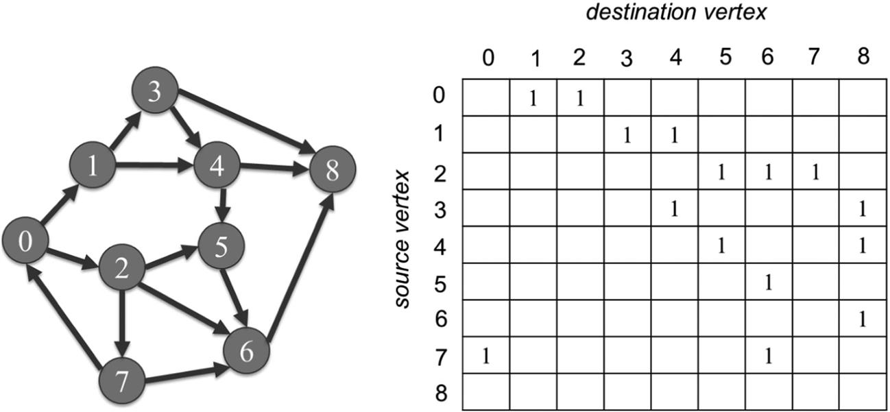
If a graph with N vertices is fully connected, that is, every vertex is connected with all other vertices, each vertex should have (N−1) outgoing edges. There should be a total of N(N−1) edges, since there is no edge going from a vertex to itself. For example, if our nine-vertex graph were fully connected, there should be eight edges going out of each vertex. There should be a total of 72 edges. Obviously, our graph is much less connected; each vertex has three or fewer outgoing edges. Such a graph is referred to as being sparsely connected. That is, the average number of outgoing edges from each vertex is much smaller than N−1.
At this point, the reader has most likely made the correct observation that sparsely connected graphs can probably benefit from a sparse matrix representation. As we have seen in Chapter 14, Sparse Matrix Computation, using a compressed representation of the matrix can drastically reduce the amount of storage required and the number of wasted operations on the zero elements. Indeed, many real-world graphs are sparsely connected. For example, in a social network such as Facebook, Twitter, or LinkedIn, the average number of connections for each user is much smaller than the total number of users. This makes the number of nonzero elements in the adjacency matrix much smaller than the total number of elements.
Fig. 15.3 shows three representations of our simple graph example using three different storage formats: compressed sparse row (CSR), compressed sparse column (CSC), and coordinate (COO). We will refer to the row indices and pointers arrays as the src and srcPtrs arrays, respectively, and the column indices and pointers arrays as the dst and dstPtrs arrays, respectively. If we take CSR as an example, recall that in a CSR representation of a sparse matrix each row pointer gives the starting location for the nonzero elements in a row. Similarly, in a CSR representation of a graph, each source vertex pointer (srcPtrs) gives the starting location of the outgoing edges of the vertex. For example, srcPtrs[3]=7 gives the starting location of the nonzero elements in row 3 of the original adjacency matrix. Also, srcPtrs[4]=9 gives the starting location of the nonzero elements in row 4 of the original matrix. Thus we expect to find the nonzero data for row 3 in data[7] and data[8] and the column indices (destination vertices) for these elements in dst[7] and dst[8]. These are the data and column indices for the two edges leaving vertex 3. The reason we call the column index array dst is that the column index of an element in the adjacency matrix gives the destination vertex of the represented edge. In our example, we see that the destination of the two edges for source vertex 3 are dst[7]=4 and dst[8]=8. We leave it as an exercise to the reader to draw similar analogies for the CSC and COO representations.
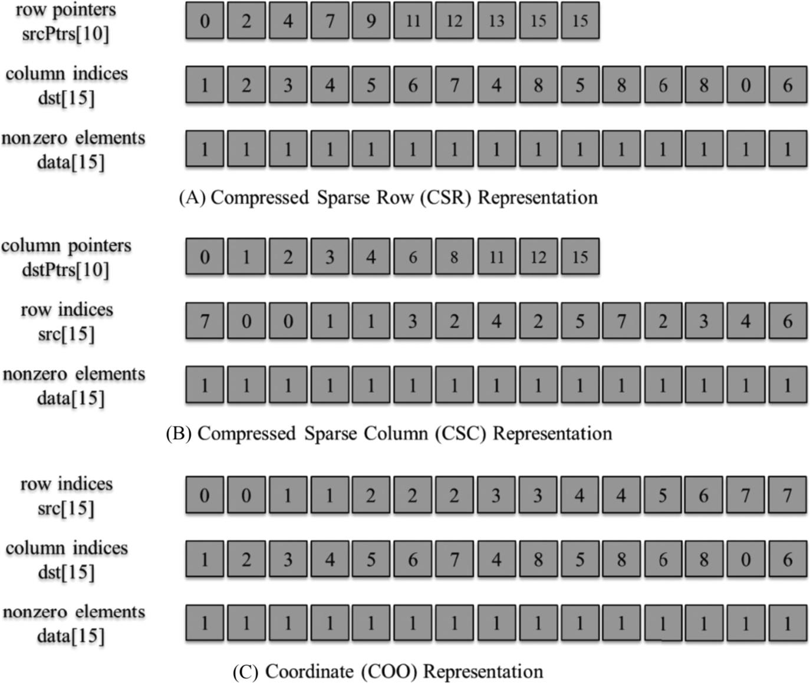
Note that the data array in this example is unnecessary. Since the value of all its elements is 1, we do not need to store it. We can make the data implicit, that is, whenever a nonzero element exists, we can just assume that it is 1. For example, the existence of each column index in the destination array of a CSR representation implies that an edge exists. However, in some applications the adjacency matrix may store additional information about the relationship, such as the distance between two locations or the date on which two social network users became connected. In those applications the data array will need to be explicitly stored.
Sparse representation can lead to significant savings in storing the adjacency matrix. For our example, assuming that the data array can be eliminated, the CSR representation requires storage for 25 locations versus the 92=81 locations if we stored the entire adjacency matrix. For real-life problems in which a very small fraction of the adjacency matrix elements are nonzero, the savings can be tremendous.
Different graphs may have drastically different structures. One way to characterize these structures is to look at the distribution of the number of edges that are connected to each vertex (the vertex degree). A road network, expressed as a graph, would have a relatively uniform degree distribution with a low average degree per vertex because each road intersection (vertex) would typically have only a low number of roads connected to it. On the other hand, a graph of Twitter followers, in which each incoming edge represents a “follow,” would have a much broader distribution of vertex degrees, with a large-degree vertex representing a popular Twitter user. The structure of the graph may influence the choice of algorithm to implement a particular graph application.
Recall from Chapter 14, Sparse Matrix Computation, that each sparse matrix representation gives different accessibility to the represented data. Hence the choice of which representation to use for the graph has implications for which information about the graph is made easily accessible to the graph traversal algorithm. The CSR representations give easy access to the outgoing edges of a given vertex. The CSC representation gives easy access to the incoming edges of a given vertex. The COO representation gives easy access to the source and destination vertices of a given edge. Therefore the choice of the graph representation goes hand-in-hand with the choice of the graph traversal algorithm. We demonstrate this concept throughout this chapter by examining different parallel implementations of breadth-first search, a widely used graph search computation.
An important graph computation is breadth-first search (BFS). BFS is often used to discover the shortest number of edges that one needs to traverse to go from one vertex to another vertex of the graph. In the graph example in Fig. 15.1 we may need to find all the alternative routes that we could take going from the location represented by vertex 0 to that represented by vertex 5. By visual inspection we see that there are three possible paths: 0→1→3→4→5, 0→1→4→5, and 0→2→5, with 0→2→5 being the shortest. There are different ways of summarizing the outcome of a BFS traversal. One way is, given a vertex that is referred to as the root, to label each vertex with the smallest number of edges that one needs to traverse to go from the root to that vertex.
Fig. 15.4(A) shows the desired BFS result with vertex 0 as the root. Through one edge, we can get to vertices 1 and 2. Thus we label these vertices as belonging to level 1. By traversing another edge, we can get to vertices 3 (through vertex 1), 4 (through vertex 1), 5 (through vertex 2), 6 (through vertex 2), and 7 (through vertex 2). Thus we label these vertices as belonging to level 2. Finally, by traversing one more edge, we can get to vertex 8 (through any of vertices 3, 4, or 6).
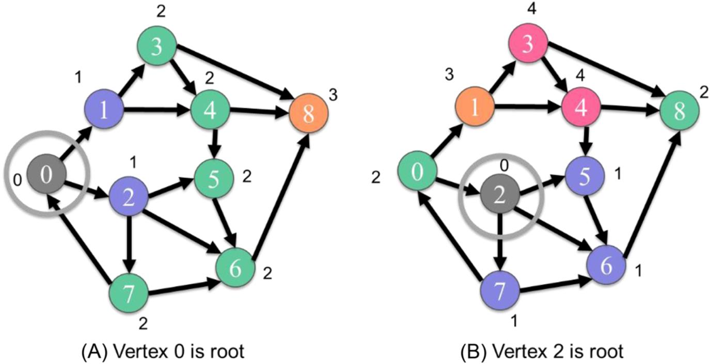
The BFS result would be quite different with another vertex as the root. Fig. 15.4(B) shows the desired result of BFS with vertex 2 as the root. The level 1 vertices are 5, 6, and 7. The level 2 vertices are 8 (through vertex 6) and 0 (through vertex 7). Only vertex 1 is at level 3 (through vertex 0). Finally, the level 4 vertices are 3 and 4 (both through vertex 1). It is interesting to note that the outcome is quite different for each vertex even though we moved the root to a vertex that is only one edge away from the original root.
One can view the labeling actions of BFS as constructing a BFS tree that is rooted in the root node of the search. The tree consists of all the labeled vertices and only the edges traversed during the search that go from a vertex at one level to vertices at the next level.
Once we have all the vertices labeled with their level, we can easily find a path from the root vertex to any of the vertices where the number of edges traveled is equivalent to the level. For example, in Fig. 15.4(B), we see that vertex 1 is labeled as level 3, so we know that the smallest number of edges between the root (vertex 2) and vertex 1 is 3. If we need to find the path, we can simply start from the destination vertex and trace back to the root. At each step, we select the predecessor whose level is one less than that of the current vertex. If there are multiple predecessors with the same level, we can randomly pick one. Any vertex thus selected would give a sound solution. The fact that there are multiple predecessors to choose from means that there are multiple equally good solutions to the problem. In our example we can find a shortest path from vertex 2 to vertex 1 by starting from vertex 1, choosing vertex 0, then vertex 7, and then vertex 2. Therefore a solution path is 2→7→0→1. This of course assumes that each vertex has a list of the source vertices of all the incoming edges so that one can find the predecessors of a given vertex.
Fig. 15.5 shows an important application of BFS in computer-aided design (CAD). In designing an integrated circuit chip, there are many electronic components that need to be connected to complete the design. The connectors of these components are called net terminals. Fig. 15.5(A) shows two such net terminals as round dots; one belongs to a component in the upper left part, and the other belongs to another component in the lower right part of the chip. Assume that the design requires that these two net terminals be connected. This is done by running, or routing, a wire of a given width from the first net terminal to the second net terminal.
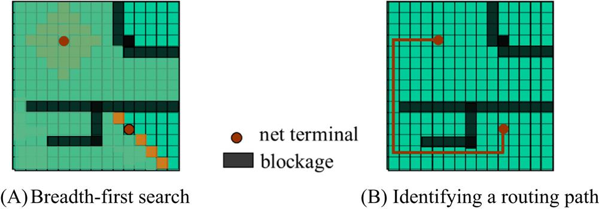
The routing software represents the chip as a grid of wiring blocks in which each block can potentially serve as a piece of a wire. A wire can be formed by extending in either the horizontal or the vertical direction. For example, the black J-shape in the lower half of the chip consists of 21 wiring blocks and connects three net terminals. Once a wiring block is used as part of a wire, it can no longer be used as part of any other wires. Furthermore, it forms a blockage for wiring blocks around it. No wires can be extended from a used block’s lower neighbor to its upper neighbor or from its left neighbor to its right neighbor, and so on. Once a wire is formed, all other wires must be routed around it. Routing blocks can also be occupied by circuit components, which impose the same blockage constraint as when they are used as part of a wire. This is why the problem is called a maze routing problem. The previously formed circuit components and wires form a maze for the wires that have yet to be formed. The maze routing software finds a route for each additional wire given all the constraints from the previously formed components and wires.
The maze routing application represents the chip as a graph. The routing blocks are vertices. An edge from vertex i to vertex j indicates that one can extend a wire from block i to block j. Once a block is occupied by a wire or a component, it is either marked as a blockage vertex or taken away from the graph, depending on the design of the application. Fig. 15.5 shows that the application solves the maze routing problem with a BFS from the root net terminal to the target net terminal. This is done by starting with the root vertex and labeling the vertices into levels. The immediate vertical or horizontal neighbors (a total of four) that are not blockages are marked as level 1. We see that all four neighbors of the root are reachable and will be marked as level 1. The neighbors of level 1 vertices that are neither blockages nor visited by the current search will be marked as level 2. The reader should verify that there are four level 1 vertices, eight level 2 vertices, twelve level 3 vertices, and so on in Fig. 15.5(A). As we can see, the BFS essentially forms a wavefront of vertices for each level. These wavefronts start small for level 1 but can grow very large very quickly in a few levels.
Fig. 15.5(B) shows that once the BFS is complete, we can form a wire by finding a shortest path from the root to the target. As was explained earlier, this can be done by starting with the target vertex and tracing back to the predecessors whose levels are one lower than that of the current vertex. Whenever there are multiple predecessors that have equivalent levels, there are multiple routes that are of the same length. One could design heuristics to choose the predecessor in a way that minimizes the difficulty of constraints for wires that have yet to be formed.
A natural way to parallelize graph algorithms is to perform operations on different vertices or edges in parallel. In fact, many parallel implementations of graph algorithms can be classified as vertex-centric or edge-centric. A vertex-centric parallel implementation assigns threads to vertices and has each thread perform an operation on its vertex, which usually involves iterating over the neighbors of that vertex. Depending on the algorithm, the neighbors of interest may be those that are reachable via the outgoing edges, the incoming edges, or both. In contrast, an edge-centric parallel implementation assigns threads to edges and has each thread perform an operation on its edge, which usually involves looking up the source and destination vertices of that edge. In this section we look at two different vertex-centric parallel implementations of BFS: one that iterates over outgoing edges and one that iterates over incoming edges. In the next section we look at an edge-centric parallel implementation of BFS and compare.
The parallel implementations that we will look at follow the same strategy when it comes to iterating over levels. In all implementations we start by labeling the root vertex as belonging to level 0. We then call a kernel to label all the neighbors of the root vertex as belonging to level 1. After that, we call a kernel to label all the unvisited neighbors of the level 1 vertices as belonging to level 2. Then we call a kernel to label all the unvisited neighbors of the level 2 vertices as belonging to level 3. This process continues until no new vertices are visited and labeled.
The reason a separate kernel is called for each level is that we need to wait until all vertices in a previous level have been labeled before proceeding to label vertices in the next level. Otherwise, we risk labeling a vertex incorrectly. In the rest of this section we focus on implementing the kernel that is called for each level. That is, we will implement a BFS kernel that, given a level, labels all the vertices that belong to that level on the basis of the labels of the vertices from previous levels.
The first vertex-centric parallel implementation assigns each thread to a vertex to iterate over the vertex’s outgoing edges (Harish and Narayanan, 2007). Each thread first checks whether its vertex belongs to the previous level. If so, the thread will iterate over the outgoing edges to label all the unvisited neighbors as belonging to the current level. This vertex-centric implementation is often referred to as a top-down or push implementation.1 Since this implementation requires accessibility to the outgoing edges of a given source vertex (i.e., nonzero elements of a given row of the adjacency matrix), a CSR representation is needed.
Fig. 15.6 shows the kernel code for the vertex-centric push implementation, and Fig. 15.7 shows an example of how this kernel performs a traversal from level 1 (previous level) to level 2 (current level). The kernel starts by assigning a thread to each vertex (line 03), and each thread ensures that its vertex id is within bounds (line 04). Next, each thread checks whether its vertex belongs to the previous level (line 05). In Fig. 15.7, only the threads assigned to vertices 1 and 2 will pass this check. The threads that pass this check will then use the CSR srcPtrs array to locate the outgoing edges of the vertex and iterate over them (lines 06–07). For each outgoing edge, the thread finds the neighbor at the destination of the edge using the CSR dst array (line 08). The thread then checks whether the neighbor has not been visited by checking whether the neighbor has been assigned to a level yet (line 09).
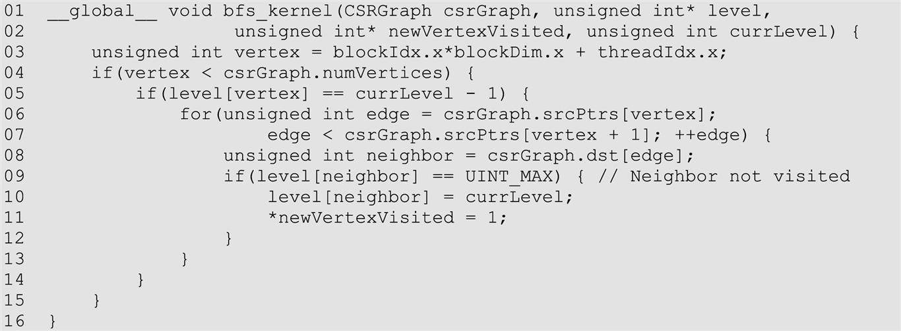
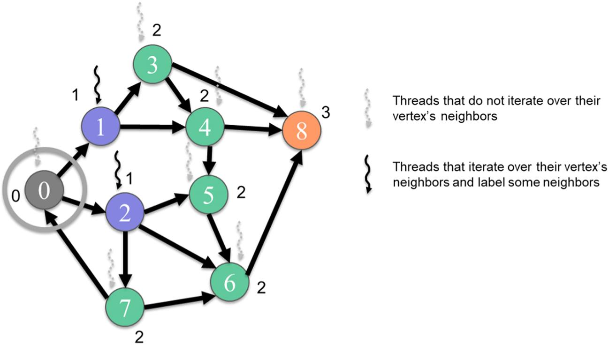
Initially, all vertex levels are set to UINT_MAX, which means that the vertex is unreachable. Hence a neighbor has not been visited if its level is still UINT_MAX. If the neighbor has not been visited, the thread will label the neighbor as belonging to the current level (line 10). Finally, the thread will set a flag indicating that a new vertex has been visited (line 11). This flag is used by the launching code to decide whether a new grid needs to be launched to process a new level or we have reached the end. Note that multiple threads can assign 1 to the flag and the code will still execute correctly. This property is termed idempotence. In an idempotent operation such as this one, we do not need an atomic operation because the threads are not performing a read-modify-write operation. All threads write the same value, so the outcome is the same regardless of how many threads perform a write operation.
The second vertex-centric parallel implementation assigns each thread to a vertex to iterate over the vertex’s incoming edges. Each thread first checks whether its vertex has been visited yet. If not, the thread will iterate over the incoming edges to find whether any of the neighbors belong to the previous level. If the thread finds a neighbor that belongs to the previous level, the thread will label its vertex as belonging to the current level. This vertex-centric implementation is often referred to as a bottom-up or pull implementation.2 Since this implementation requires accessibility to the incoming edges of a given destination vertex (i.e., nonzero elements of a given column of the adjacency matrix), a CSC representation is needed.
Fig. 15.8 shows the kernel code for the vertex-centric pull implementation, and Fig. 15.9 shows an example of how this kernel performs a traversal from level 1 to level 2. The kernel starts by assigning a thread to each vertex (line 03), and each thread ensures that its vertex id is within bounds (line 04). Next, each thread checks whether its vertex has not been visited yet (line 05). In Fig. 15.9 the threads that are assigned to vertices 3–8 all pass this check. The threads that pass this check will then use the CSC dstPtrs array to locate the incoming edges of the vertex and iterate over them (lines 06–07). For each incoming edge, the thread finds the neighbor at the source of the edge, using the CSC src array (line 08). The thread then checks whether the neighbor belongs to the previous level (line 09). If so, the thread will label its vertex as belonging to the current level (line 10) and set a flag indicating that a new vertex has been visited (line 11). The thread will also break out of the loop (line 12).
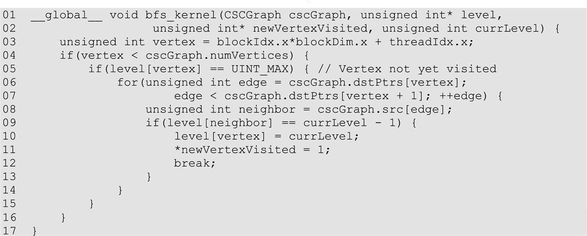
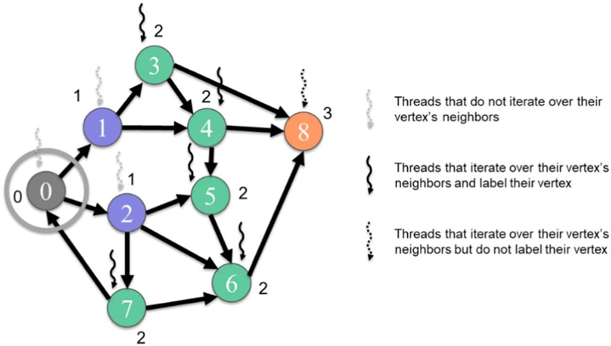
The justification for breaking out of the loop is as follows. For a thread to establish that its vertex is in the current level, it is sufficient for the thread’s vertex to have one neighbor in the previous level. Therefore it is unnecessary for the thread to check the rest of the neighbors. Only the threads whose vertices do not have any neighbors in the previous level will end up looping over the entire neighbors list. In Fig. 15.9, only the thread assigned to vertex 8 will loop over the entire neighbor list without breaking.
In comparing the push and pull vertex-centric parallel implementations, there are two key differences to consider that have an important impact on performance. The first difference is that in the push implementation a thread loops over its vertex’s entire neighbor list, whereas in the pull implementation a thread may break out of the loop early. For graphs with low degree and low variance, such as road networks or CAD circuit models, this difference may not be important because the neighbor lists are small and similar in size. However, for graphs with high degree and high variance, such as social networks, the neighbor lists are long and may vary substantially in size, resulting in high load imbalance and control divergence across threads. For this reason, breaking out of the loop early can provide substantial performance gains by reducing load imbalance and control divergence.
The second important difference between the two implementations is that in the push implementation, only the threads assigned to vertices in the previous level loop over their neighbor list, whereas in the pull implementation, all the threads assigned to any unvisited vertex loop over their neighbor list. For earlier levels, we expect to have a relatively small number of vertices per level and a large number of unvisited vertices in the graph. For this reason, the push implementation typically performs better for earlier levels because it iterates over fewer neighbor lists. In contrast, for later levels, we expect to have more vertices per level and fewer unvisited vertices in the graph. Moreover, the chances of finding a visited neighbor in the pull approach and exiting the loop early are higher. For this reason the pull implementation typically performs better for later levels.
Based on this observation, a common optimization is to use the push implementation for earlier levels, then switch to the pull implementation for later levels. This approach is often referred to as a direction-optimized implementation. The choice of when to switch between implementations usually depends on the type of graph. Low-degree graphs usually have many levels, and it takes a while to reach a point at which the levels have many vertices and a substantial number of vertices have already been visited. On the other hand, high-degree graphs usually have few levels, and the levels grow very quickly. The high-degree graphs in which it takes only a few levels to get from any vertex to any other vertex are usually referred to as small world graphs. Because of these properties, switching from the push implementation to the pull implementation usually happens much earlier for high-degree graphs than for low-degree graphs.
Recall that the push implementation uses a CSR representation of the graph, whereas the pull implementation uses a CSC representation of the graph. For this reason, if a direction-optimized implementation is to be used, both a CSR and a CSC representation of the graph need to be stored. In many applications, such as social networks or maze routing, the graph is undirected, which means that the adjacency matrix is symmetric. In this case, the CSR and CSC representations are equivalent, so only one of them needs to be stored and can be used by both implementations.
In this section we look at an edge-centric parallel implementation of BFS. In this implementation, each thread is assigned to an edge. It checks whether the source vertex of the edge belongs to the previous level and whether the destination vertex of the edge is unvisited. If so, it labels the unvisited destination vertex as belonging to the current level. Since this implementation requires accessibility to the source and destination vertices of a given edge (i.e., row and column indices of a given nonzero), a COO data structure is needed.
Fig. 15.10 shows the kernel code for the edge-centric parallel implementation, while Fig. 15.11 shows an example of how this kernel performs a traversal from level 1 to level 2. The kernel starts by assigning a thread to each edge (line 03), and each thread ensures that its edge id is within bounds (line 04). Next, each thread finds the source vertex of its edge, using the COO src array (line 05), and checks whether the vertex belongs to the previous level (line 06). In Fig. 15.11, only the threads assigned to the outgoing edges of vertices 1 and 2 will pass this check. The threads that pass this check will locate the neighbor at the destination of the edge, using the COO dst array (line 07), and check whether the neighbor has not been visited (line 08). If not, the thread will label the neighbor as belonging to the current level (line 09). Finally, the thread will set a flag indicating that a new vertex has been visited (line 10).
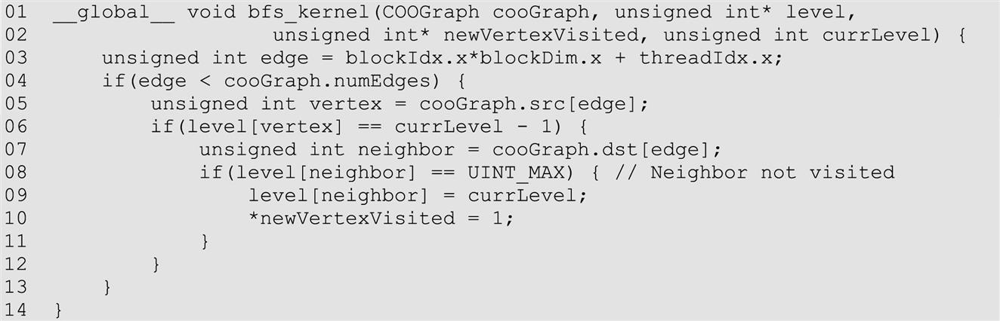
The edge-centric parallel implementation has two main advantages over the vertex-centric parallel implementations. The first advantage is that the edge-centric implementation exposes more parallelism. In the vertex-centric implementations, if the number of vertices is small, we may not launch enough threads to fully occupy the device. Since a graph typically has many more edges than vertices, the edge-centric implementation can launch more threads. Hence the edge-centric implementation is usually more suitable for small graphs.
The second advantage of the edge-centric implementation over the vertex-centric implementations is that it exhibits less load imbalance and control divergence. In the vertex-centric implementations, each thread iterates over a different number of edges, depending on the degree of the vertex to which it is assigned. In contrast, in the edge-centric implementation, each thread traverses only one edge. With respect to the vertex-centric implementation the edge-centric implementation is an example of rearranging the mapping of threads to work or data to reduce control divergence, as was discussed in Chapter 6, Performance Considerations. The edge-centric implementation is usually more suitable for high-degree graphs that have a large variation in the degrees of vertices.
The disadvantage of the edge-centric implementation is that it checks every edge in the graph. In contrast, the vertex-centric implementations can skip an entire edge list if the implementation determines that a vertex is not relevant for the level. For example, consider the case in which some vertex v has n edges and is not relevant for a particular level. In the edge-centric implementation our launch includes n threads, one for each edge, and each of these threads independently inspects v and discovers that the edge is irrelevant. In contrast, in the vertex-centric implementations, our launch includes only one thread for v that skips all n edges after inspecting v once to determine that it is irrelevant. Another disadvantage of the edge-centric implementation is that it uses COO, which requires more storage space to store the edges compared to CSR and CSC, which are used by the vertex-centric implementations.
The reader may have noticed that the code examples in the previous section and this one resemble our implementations of sparse matrix-vector multiplication (SpMV) in Chapter 14, Sparse Matrix Computation. In fact, with a slightly different formulation we can express a BFS level iteration entirely in terms of SpMV and a few other vector operations, in which the SpMV operation is the dominant operation. Beyond BFS, many other graph computations can also be formulated in terms of sparse matrix computations, using the adjacency matrix (Jeremy and Gilbert, 2011). Such a formulation is often referred to as the linear-algebraic formulation of graph problems and is the focus of an API specification known as GraphBLAS. The advantage of linear-algebraic formulations is that they can leverage mature and highly optimized parallel libraries for sparse linear algebra to perform graph computations. The disadvantage of linear-algebraic formulations is that they may miss out on optimizations that take advantage of specific properties of the graph algorithm in question.
In the approaches that we discussed in the previous two sections, we checked every vertex or edge in every iteration for their relevance to the level in question. The advantage of this strategy is that the kernels are highly parallel and do not require any synchronization across threads. The disadvantage is that many unnecessary threads are launched and a lot of wasted work is performed. For example, in the vertex-centric implementations we launch a thread for every vertex in the graph, many of which simply discover that the vertex is not relevant and do not perform any work. Similarly, in the edge-centric implementation we launch a thread for every edge in the graph; many of the threads simply discover that the edge is not relevant and do not perform any useful work.
In this section we aim to avoid launching unnecessary threads and eliminate the redundant checks that they perform in each iteration. We will focus on the vertex-centric push approach that was presented in Section 15.3. Recall that in the vertex-centric push approach, for each level, a thread is launched for each vertex in the graph. The thread checks whether its vertex is in the previous level, and if so, it labels all the vertex’s unvisited neighbors as belonging to the current level. On the other hand, the threads whose vertices are not in the current level do not do anything. Ideally, these threads should not even be launched. To avoid launching these threads, we can have the threads processing the vertices in the previous level collaborate to construct a frontier of the vertices that they visit. Hence for the current level, threads need to be launched only for the vertices in that frontier (Luo et al., 2010).
Fig. 15.12 shows the kernel code for the vertex-centric push implementation that uses frontiers, and Fig. 15.13 shows an example of how this kernel performs a traversal from level 1 to level 2. A key distinction from the previous approach is that the kernel takes additional parameters to represent the frontiers. The additional parameters include the arrays prevFrontier and currFrontier to store the vertices in the previous and current frontiers, respectively. They also include pointers to the counters numPrevFrontier and numCurrFrontier that store the number of vertices in each frontier. Note that the flag for indicating that a new vertex has been visited is no longer needed. Instead, the host can tell that the end has been reached when the number of vertices in the current frontier is 0.
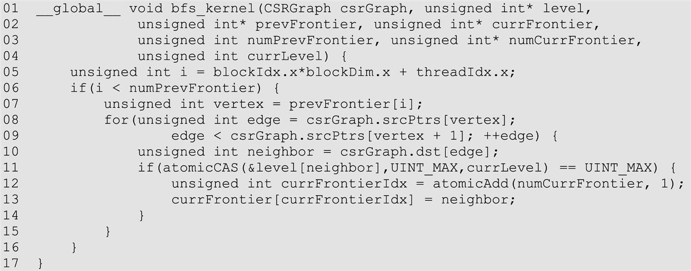
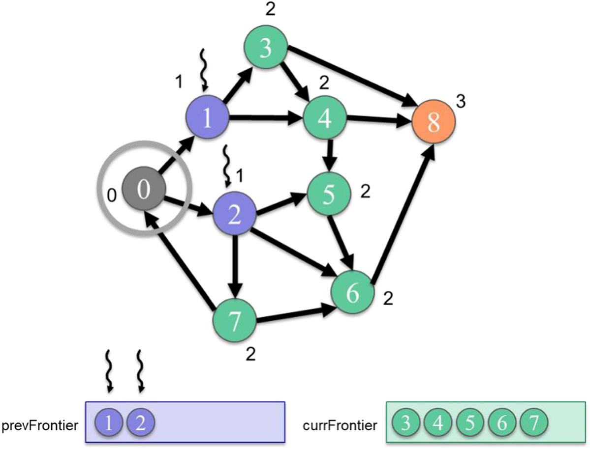
We now look at the body of the kernel in Fig. 15.12. The kernel starts by assigning a thread to each element of the previous frontier (line 05), and each thread ensures that its element id is within bounds (line 06). In Fig. 15.13, only vertices 1 and 2 are in the previous frontier, so only two threads are launched. Each thread loads its element from the previous frontier, which contains the index of the vertex that it is processing (line 07). The thread uses the CSR srcPtrs array to locate the outgoing edges of the vertex and iterate over them (lines 08–09). For each outgoing edge, the thread finds the neighbor at the destination of the edge, using the CSR dst array (line 10). The thread then checks whether the neighbor has not been visited; if not, it labels the neighbor as belonging to the current level (line 11). An important distinction from the previous implementation is that an atomic operation is used to perform the checking and labeling operation. The reason will be explained shortly. If a thread succeeds in labeling the neighbor, it must add the neighbor to the current frontier. To do so, the thread increments the size of the current frontier (line 12) and adds the neighbor to the corresponding location (line 13). The size of the current frontier needs to be incremented atomically (line 12) because multiple threads may be incrementing it simultaneously, so we need to ensure that no race condition takes place.
We now turn our attention to the atomic operation on line 11. As a thread iterates through the neighbors of its vertex, it checks whether the neighbor has been visited; if not, it labels the neighbor as belonging to the current level. In the vertex-centric push kernel without frontiers in Fig. 15.12, this checking and labeling operation is performed without atomic operations (09–10). In that implementation, if multiple threads check the old label of the same unvisited neighbor before any of them are able to label it, multiple threads may end up labeling the neighbor. Since all threads are labeling the neighbor with the same label (the operation is idempotent), it is okay to allow the threads to label the neighbor redundantly. In contrast, in the frontier-based implementation in Fig. 15.12, each thread not only labels the unvisited neighbor but also adds it to the frontier. Hence if multiple threads observe the neighbor as unvisited, they will all add the neighbor to the frontier, causing it to be added multiple times. If the neighbor is added multiple times to the frontier, it will be processed multiple times in the next level, which is redundant and wasteful.
To avoid having multiple threads observe the neighbor as unvisited, the checking and updating of the neighbor’s label should be performed atomically. In other words, we must check whether the neighbor has not been visited, and if not, label it as part of the current level all in one atomic operation. An atomic operation that can perform all of these steps is compare-and-swap, which is provided by the atomicCAS intrinsic function. This function takes three parameters: the address of the data in memory, the value to which we want to compare the data, and the value to which we would like to set the data if the comparison succeeds. In our case (line 11), we would like to compare level[neighbor] to UINT_MAX to check whether the neighbor is unvisited and set level[neighbor] to currLevel if the comparison succeeds. As with other atomic operations, atomicCAS returns the old value of the data that was stored. Therefore we can check whether the compare-and-swap operation succeeded by comparing the return value of atomicCAS with the value that atomicCAS compared with, which in this case is UINT_MAX.
As was mentioned earlier, the advantage of this frontier-based approach over the approach described in the previous section is that it reduces redundant work by only launching threads to process the relevant vertices. The disadvantage of this frontier-based approach is the overhead of the long-latency atomic operations, especially when these operations contend on the same data. For the atomicCAS operation (line 11) we expect the contention to be moderate because only some threads, not all, will visit the same unvisited neighbor. However, for the atomicAdd operation (line 12) we expect the contention to be high because all threads increment the same counter to add vertices to the same frontier. In the next section we look at how this contention can be reduced.
Recall from Chapter 6, Performance Considerations, that one optimization that can be applied to reduce the contention of atomic operations on the same data is privatization. Privatization reduces contention of atomics by applying partial updates to a private copy of the data, then updating the public copy when done. We saw an example of privatization in the histogram pattern in Chapter 9, Parallel Histogram, where threads in the same block updated a local histogram that was private to the block, then updated the public histogram at the end.
Privatization can also be applied in the context of concurrent frontier updates (increments to numCurrFrontier) to reduce the contention on inserting into the frontier. We can have each thread block maintain its own local frontier throughout the computation and update the public frontier when done. Hence threads will contend on the same data only with other threads in the same block. Moreover, the local frontier and its counter can be stored in shared memory, which enables lower-latency atomic operations on the counter and stores to the local frontier. Furthermore, when the local frontier in shared memory is stored to the public frontier in global memory, the accesses can be coalesced.
Fig. 15.14 shows the kernel code for the vertex-centric push implementation that uses privatized frontiers, while Fig. 15.15 illustrates the privatization of the frontiers. The kernel starts by declaring a private frontier for each thread block in shared memory (lines 07–08). One thread in the block initializes the frontier’s counter to 0 (lines 09–11), and all threads in the block wait at the __syncthreads barrier for the initialization to complete before they start using the counter (line 12). The next part of the code is similar to the previous version: Each thread loads its vertex from the frontier (line 17), iterates over its outgoing edges (lines 18–19), finds the neighbor at the destination of the edge (line 20), and atomically checks whether the neighbor is unvisited and visits it if it is unvisited (line 21).
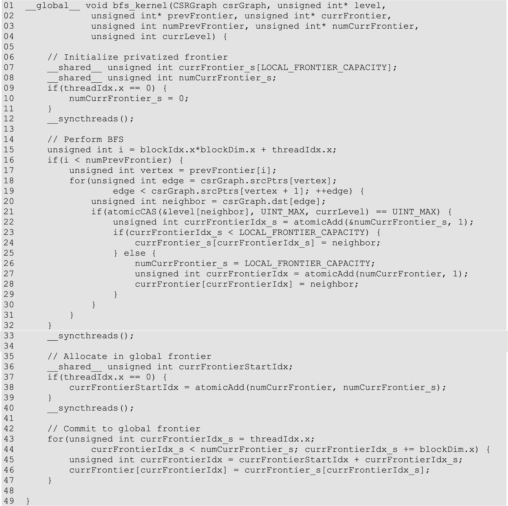
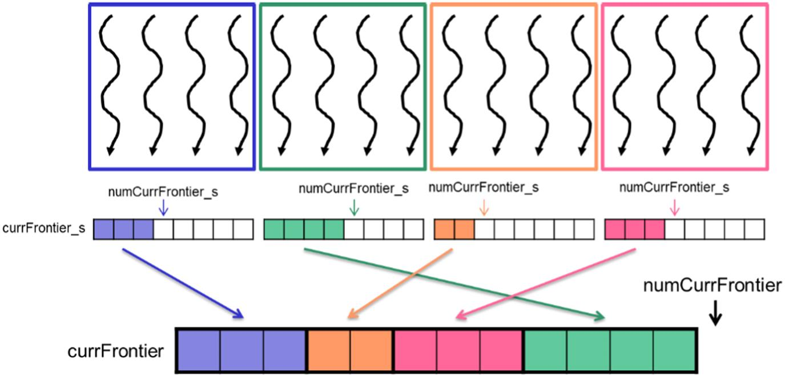
If the thread succeeds in visiting the neighbor, that is, the neighbor is unvisited, it adds the neighbor to the local frontier. The thread first atomically increments the local frontier counter (line 22). If the local frontier is not full (line 23), the thread adds the neighbor to the local frontier (line 24). Otherwise, if the local frontier has overflowed, the thread restores the value of the local counter (line 26) and adds the neighbor in the global frontier by atomically incrementing the global counter (line 27) and storing the neighbor at the corresponding location (line 28).
After all threads in a block have iterated over their vertices’ neighbors, they need to store the privatized local frontier to the global frontier. First, the threads wait for each other to complete to ensure that no more neighbors will be added to the local frontier (line 33). Next, one thread in the block acts on behalf of the others to allocate space in the global frontier for all the elements in the local frontier (lines 36–39) while all the threads wait for it (line 40). Finally, the threads iterate over the vertices in the local frontier (line 43–44) and store them in the public frontier (line 45–46). Notice that the index into the public frontier currFrontierIdx is expressed in terms of currFrontierIdx_s, which is expressed in terms of threadIdx.x. Therefore threads with consecutive thread index values store to consecutive global memory locations, which means that the stores are coalesced.
In most graphs, the frontiers of the initial iterations of a BFS can be quite small. The frontier of the first iteration has only the neighbors of the source. The frontier of the next iteration has all the unvisited neighbors of the current frontier vertices. In some cases, the frontiers of the last few iterations can also be small. For these iterations the overhead of terminating a grid and launching a new one may outweigh the benefit of parallelism. One way to deal with these iterations with small frontiers is to prepare another kernel that uses only one thread block but may perform multiple consecutive iterations. The kernel uses only a local block-level frontier and uses __syncthreads() to synchronize across all threads in between levels.
This optimization is illustrated in Fig. 15.16. In this example, levels 0 and 1 can each be processed by a single thread block. Rather than launching a separate grid for levels 0 and 1, we launch a single-block grid and use __syncthreads() to synchronize between levels. Once the frontier reaches a size that overflows the block-level frontier, the threads in the block copy the block-level frontier contents to the global frontier and return to the host code. The host code will then call the regular kernel in the subsequent level iterations until the frontier is small again. The single-block kernel thus eliminates the launch overhead for the iterations with small frontiers. We leave its implementation as an exercise for the reader.
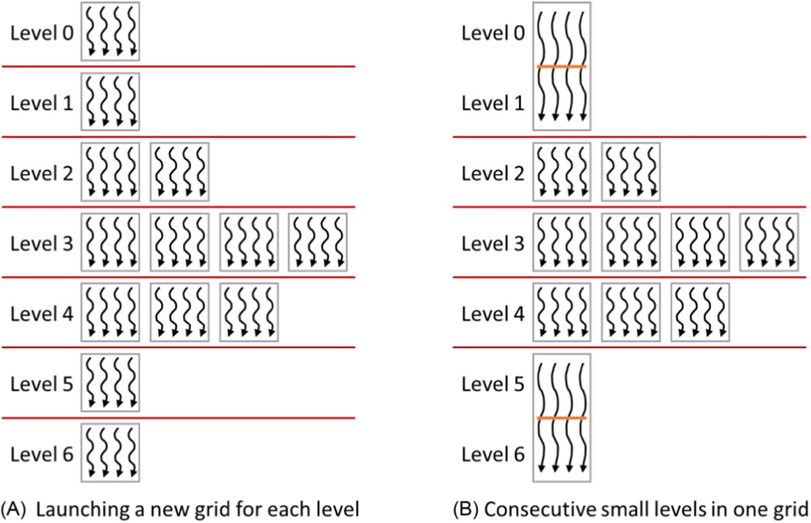
Recall that in the vertex-centric implementations the amount of work to be done by each thread depends on the connectivity of the vertex that is assigned to it. In some graphs, such as social network graphs, some vertices (celebrities) may have degrees that are several orders of magnitude higher than those of other vertices. When this happens, one or a few of the threads can take excessively long and slow down the execution of the entire grid. We have seen one way to address this issue, which is by using an edge-centric parallel implementation instead. Another way in which we can potentially address this issue is by sorting the vertices of a frontier into buckets depending on their degree and processing each bucket in a separate kernel with an appropriately sized group of processors. One notable implementation (Merrill and Garland, 2012) uses three different buckets for vertices with small, medium, and large degrees. The kernel processing the small buckets assigns each vertex to a single thread; the kernel processing the medium buckets assigns each vertex to a single warp; and the kernel processing the large buckets assigns each vertex to an entire thread block. This technique is particularly useful for graphs with a high variation in vertex degrees.
While BFS is among the simplest graph applications, it exhibits the challenges that are characteristic of more complex applications: problem decomposition for extracting parallelism, taking advantage of privatization, implementing fine-grained load balancing, and ensuring proper synchronization. Graph computation is applicable to a wide range of interesting problems, particularly in the areas of making recommendations, detecting communities, finding patterns within a graph, and identifying anomalies. One significant challenge is to handle graphs whose size exceeds the memory capacity of the GPU. Another interesting opportunity is to preprocess the graph into other formats before beginning computation in order to expose more parallelism or locality or to facilitate load balancing.
In this chapter we have seen the challenges that are associated with parallelizing graph computations, using breadth-first search as an example. We started with a brief introduction to the representation of graphs. We discussed the differences between vertex-centric and edge-centric parallel implementations and observed the tradeoffs between them. We also saw how to eliminate redundant work by using frontiers and optimized the use of frontiers by using privatization. We also briefly discussed other advanced optimizations to reduce synchronization overhead and improve load balance.
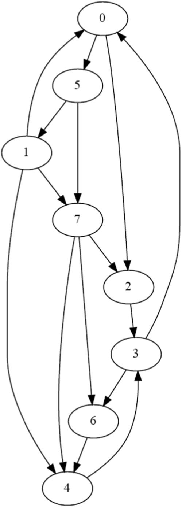